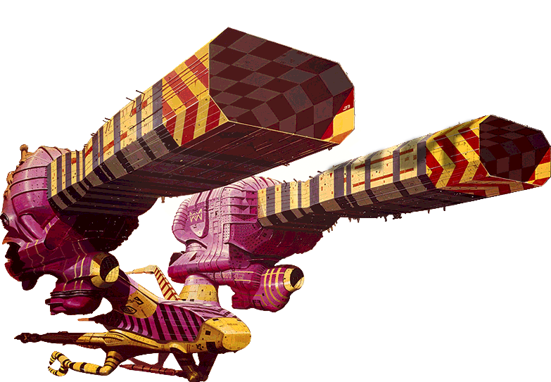

There are many different types of debris in our orbit today. Objects ranging from prior launch waste, to broken down satellites, meteorites, asteroids and much more. In the year 2013 there were already more than 500 000 pieces of debris being tracked by Nasa. Advancements in technology over the years began to increase this number at an exponential rate, with more satellites being launched daily, and commercial space flights becoming highly available to the public.
Today, in 2049, Space Dusters is proud to say we have developed a revolutionary way of mediating the problem of space debris. We use a wide combination of the world’s most revolutionary technologies to tackle the problems faced within earth's orbit, but oddly enough, our company would not be what it is today without our humble beginnings as researchers of lock and key technologies.
We are on the leading edge of the ecological and technological movements, by using the most advanced technologies to mitigate the increasing amount of orbital debris. Our flagship vessel, ZZB-968x, combines several technologies, which are discussed below, for a solution that is highly efficient, adaptive, and resourceful.
We are able to scan every piece of debris before it enters the mouth of the ZZB-963x and determine exactly what it is comprised of, within milliseconds of contact. With this information, we determine precise cut points on the item based on the materials within the debris. Using our ships different laser systems, we can cut up the debris into pieces as small as 1 cm in diameter to allow our sorting technologies to work with ease. The cut points are determined by our highly sophisticated AI, which determines the best cut points for separating valuables and recyclables from waste. After cutting, our polarization-controlled optical tractor beams take over in the sorting and collection phase of orbital clean up.
Utilizing a technology whos prototype only arose in late 2014, we can control the polarization of our lasers, effectively making a tractor beam through controlled zones of high temperatures. By encapsulating materials within a cylindrical beam of heat produced by the laser, we can utilize the polarization of the beam to control the movement of materials with ease. We use this unique property in lasers to capture rare or recyclable materials, and hold them in place, while waste is directed to the appropriate disposable collection module. When the waste has been contained, our unique rutter system activates exposing the collection module dedicated to valuable materials. Our tractor beams disengage and the materials are effectively collected.
Space dusters relies on the collaboration with many industry leaders in technology and material sciences, and NASA has paired with our team at Space Dusters to find a solution that effectively captures the debris after it has been cut down in the analysis phase, and seperated in the sorting phase. The solution developed was large collection modules that are injected with NASA's Aerogel. Nasa’s Aerogel, has chemical and physical properties that allow for the capturing a range of microscopic particles to much larger metals and rocks. Once the collection modules have reached a specific mass, the recyclable module detaches on a path to earth for processing and recycling, and the non-recyclable materials are directed into the sun, ensuring the waste is completely disposed of.
The brain of our ZZB-968x is comprised of the worlds fastest quantum computers, running the renowned AI architecture developed by Skycatch to ensure the lowest possible chance of collisions or failures and to provide the highest efficiency when working in orbit with limited resources readily available.
The ZZB-968x is lined with zenertechs proprietary nano textiles, making the outer surface of the ship virtually impenetrable to orbital debris. this revolutionary material is self healing.........
Our thrusters utilize electricity harvested through solar arrays, combined with minute amounts of the element xenon. The engines essentially strip the electrons from the element to induce the creation of plasma which can then be used as a propellant. The plasma ejected from our thrusters to move the ZZB-968x through our orbit at speeds of up to 70 000 mph.
the walls of the ZZB-968x are lined with a patented non newtonian ferrofluid, allowing for the energy of high impacts, to be absorbed into the walls of the ship. The properties of this fluid means that upon compression, the electrons and protons are separated by the force which is absorbed through a conductive encasement effectively converting the kinetic energy to stored, potential energy.
The world's leading physicists in laser technology have come together to develop our revolutionary laser based tractor beam system that manipulates particulate matter through heat. By projecting cylindrical beams at the broken down debris, hot spots are created around the object allowing for the object's movement to be completely controlled.
We utilize Nasa’s proprietary aerogel for our collection modules, due to its unique properties. Aerogel is well known for the fact that it is a solid with one of the lowest densities, its Low thermal conductivity, and a low dielectric constant, meaning it is an extremely robust material. The collection modules utilize small blocks of this gel that are capable of effectively capturing debris flying in at 12 km/s.
Space Dusters started as a small concept that was developed for a entrepreneurship class project, and the company has since grown into the world's leading orbital debris surveillance, and debris collection enterprise. Many of us here at Space Dusters believe that this success is owed to our original research. The pictures shown below was taken all the way back in 2018, and demonstrates how these rudementary ideas and concepts would change the way we orbit our planet for the rest of time.
Concepts for Laser Tractor Beams
Concepts For Wall Lining
Concepts Supporting Fluid Science